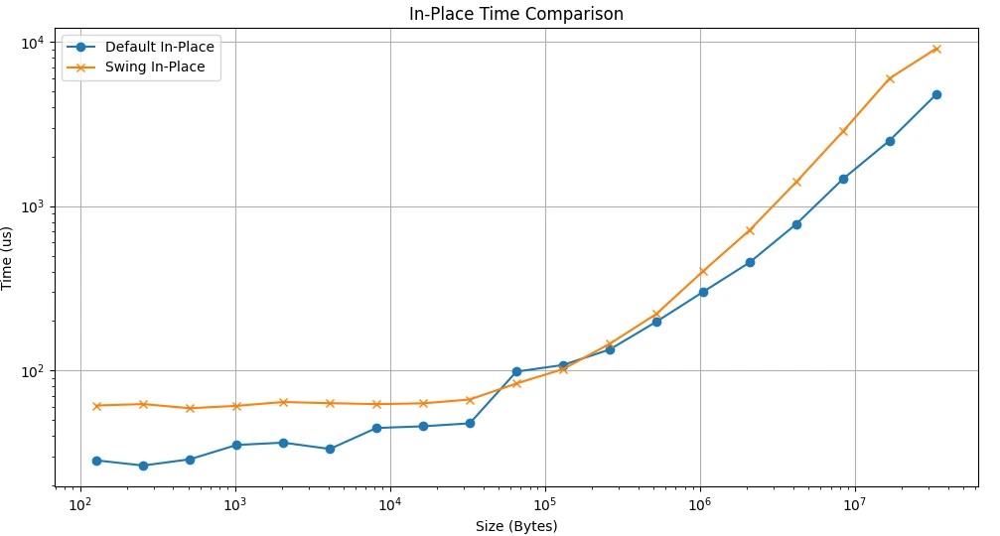

From a collective algorithm to executable GPU operations
Distributed training relies on collective communication to combine results across devices. My bachelor’s thesis implemented Swing AllReduce using MSCCLang, a Python-embedded language that expresses communication through chunk copy and reduction operations and lowers them for execution through MSCCL/NCCL.
The Swing algorithm itself is prior research. My contribution was the GPU implementation and tooling for understanding its execution, with experiments in the Leonardo HPC environment.
My contribution: make the instruction graph readable
I built an instruction-DAG visualizer that exposes chunk movement, dependencies and operation fusion. The tool represents the schedule before and after fusion, making it possible to inspect how a high-level collective turns into GPU operations.

The implementation handles grouped chunks and dependencies, then produces a graph layout with igraph. This turns a difficult-to-inspect execution schedule into something useful for debugging and explaining collective communication.
What the first benchmark showed

The first Swing implementation ran on GPUs, but its operations were not fused effectively. The presentation’s benchmark shows it slower than the default in-place implementation across most of the plotted message sizes.
The engineering result. Implementing the algorithm was necessary, but scheduling and fusion determined whether the communication pattern became a performance win. The visualizer helped expose that gap. This prototype is not presented as a demonstrated speedup over NCCL.
What comes next
The thesis identifies operation fusion, a more efficient MSCCL implementation and more systematic benchmarking as the next steps. The repository contains the implementation and supporting documentation.
Source: Implementation of Swing algorithm on NCCL, bachelor’s thesis presentation, Alessio Olivieri, Sapienza University of Rome, December 2024. Figures extracted from the supplied presentation.